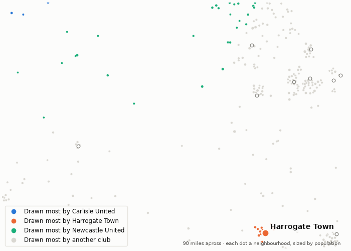
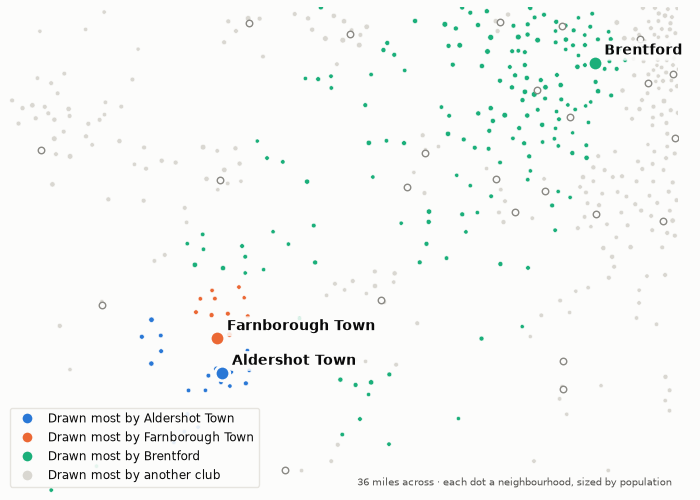

Whose people this week's clubs are playing for. 28 October 2026.
178,000 people live nearer to Carlisle United's ground than to any other. Carlisle United draw 52% of them; Harrogate Town draw 0%. The next biggest draws are Newcastle United (7%), Sunderland (5%) and Leeds United (2%).
219,000 people live nearer to Harrogate Town's ground than to any other. Harrogate Town draw 30% of them; Carlisle United draw 0%. The next biggest draws are Leeds United (22%), Manchester City (3%) and Hull City (3%).
They meet on Wednesday. On the map, each neighbourhood takes the colour of the club that draws most of it.

The model gives Aldershot Town 120,000 people to draw on, the 86th largest market of the 112 clubs in the top five divisions. They sit 102nd in the pyramid: 14th in the National League.
On their own doorstep, 111,000 people, they draw 52%. The next biggest draws are Farnborough Town (5%), Brentford (4%) and Fulham (3%).
They play Sutton away on Wednesday.

Modelled, not counted. A club's doorstep is the neighbourhoods nearer its ground than any other; every neighbourhood's people are split across all clubs by distance and division, as the divisions stand today. How catchment is measured.
Built from the English football database, tiers 1–5 from 1958/59. Results from football-data.co.uk. Archived copy.